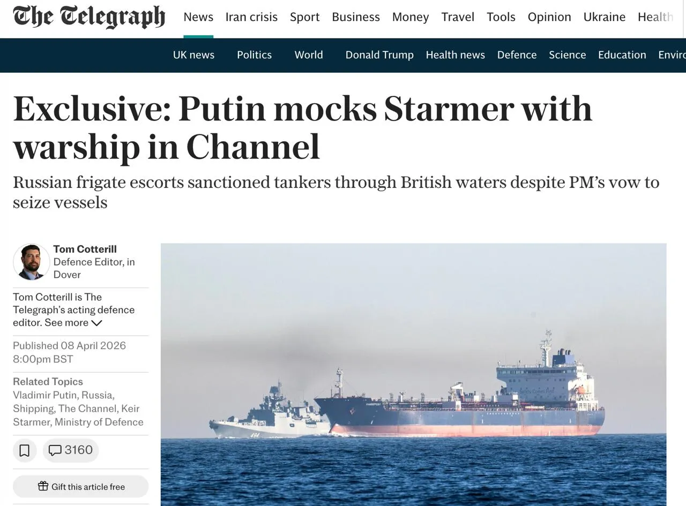
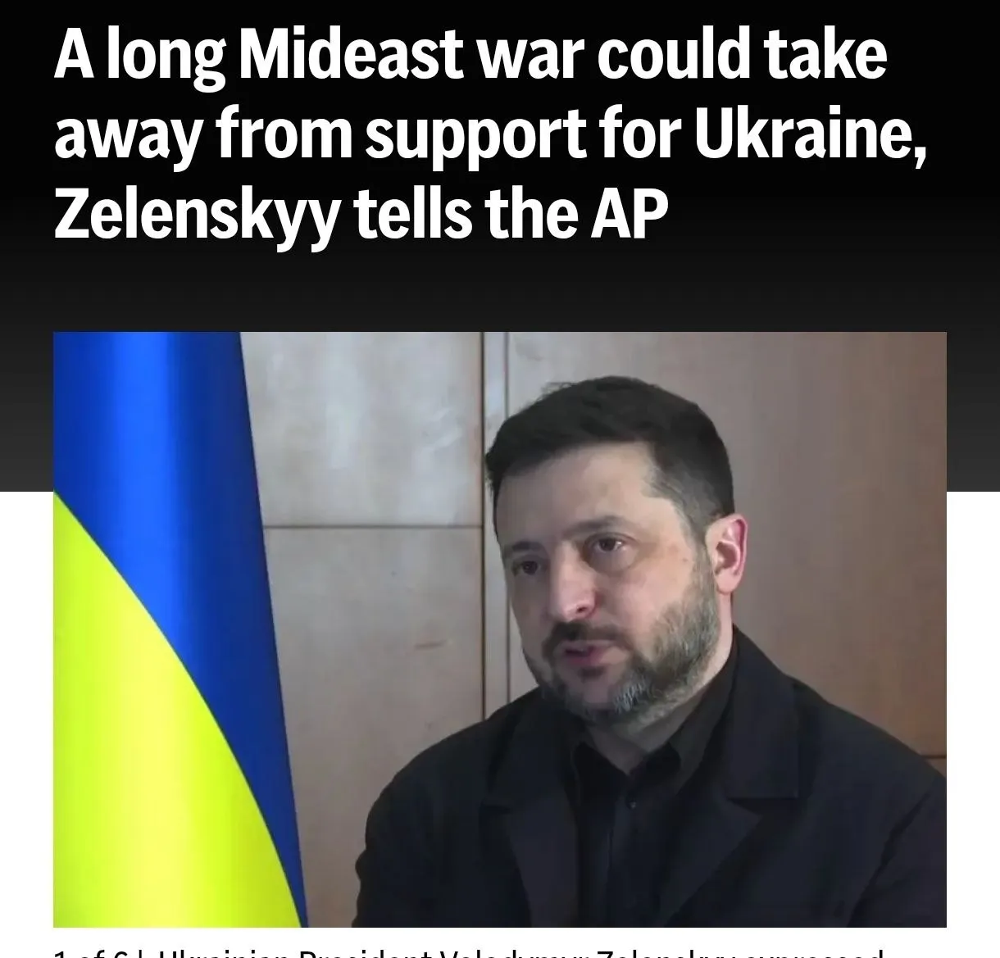
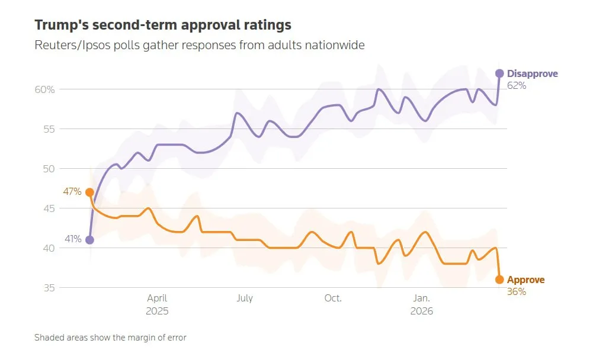

Война в Иране: нефть, Россия и давление на Украину
Дата:

Главная проблема здесь не в одной войне, а в том, что она начинает менять сразу несколько больших правил.
На первый взгляд кажется, что речь идет просто о еще одном ближневосточном конфликте. Но на деле все серьезнее. История вокруг Ирана быстро выходит за пределы региона и начинает влиять на нефть, на доходы государств, на решения США и на положение Украины.
Для обычного человека это можно объяснить очень просто. Когда в районе Ирана начинается большая нестабильность, мир сразу думает о нефти. Когда мир думает о нефти, меняются цены, бюджеты, военные расходы и политические решения. А дальше эта цепочка уже бьет по другим направлениям, в том числе по украинскому вопросу.
Ключевой фактор - контроль Ормузского пролива.
Это узкое место, через которое проходит огромный поток нефти. Если там растет риск, рынок нервничает даже без полного перекрытия маршрута. Необязательно останавливать танкеры полностью. Достаточно, чтобы мир поверил: проход стал опаснее, дороже и менее предсказуемым.
И вот здесь Иран получает важный рычаг. Даже если формально боевые действия идут волнами, сам факт напряжения вокруг пролива уже превращается в инструмент давления. Ирану для этого не нужно побеждать весь Запад. Ему достаточно сохранить возможность влиять на обстановку в точке, от которой зависит слишком многое.
Россия и нефть

Для России важен не разовый скачок, а долгий дорогой и нервный рынок.
Если объяснять совсем просто, то высокая нефть - это дополнительные деньги. Но еще важнее другое. России выгоднее не один резкий всплеск цен на несколько дней, а долгая ситуация, когда рынок все время живет в напряжении и закладывает риск новых сбоев.
В таком сценарии российский бюджет чувствует себя увереннее. Экспортные доходы становятся устойчивее, а значит у государства появляется больше пространства для расходов, в том числе военных и социальных. Это не решает все проблемы автоматически, но заметно меняет общий фон.
Поэтому конфликт вокруг Ирана для России важен не только как новость с Ближнего Востока. Он важен как внешний фактор, который способен улучшить для Москвы экономическую обстановку без каких-то дополнительных действий с ее стороны.
На этом фоне даже небольшие шаги США по санкциям или по морской логистике начинают смотреться иначе. По отдельности они могут казаться техническими. Но в большой картине это уже сигналы того, что Вашингтону приходится действовать осторожнее и гибче, чем раньше.
Украина

Самое важное последствие - Украина перестает быть единственным приоритетом для США и их союзников.
Пока внимание Запада было сосредоточено в первую очередь на Украине, Киев мог рассчитывать на более понятную логику поддержки. Но если США глубже втягиваются в ближневосточный кризис, ресурсы, время и политическое внимание начинают делиться.
А ресурсов всегда меньше, чем кажется в громких заявлениях. Оружие, боеприпасы, деньги, логистика, политическая энергия - все это не бесконечно. Если часть этого потока уходит на Ближний Восток, Украина получает не полный остаток прежней помощи, а уже помощь по остаточному принципу.
Для Киева это опасная история. Потому что вся украинская стратегия долгое время строилась на двух вещах: на постоянной западной подпитке и на давлении на российскую экономику. Если помощь становится менее стабильной, а российские нефтяные доходы, наоборот, могут вырасти, баланс начинает постепенно смещаться.
Есть и еще один момент. Любой новый конфликт показывает, что союзники США не всегда готовы одинаково активно включаться в чужую повестку. Европа и без того живет под внутренним экономическим и политическим давлением. Это значит, что вопрос новых пакетов помощи Украине будет решаться тяжелее, дольше и конфликтнее.
Итог

Если собрать все в одну простую схему, картина выглядит так. Иран создает угрозу важнейшему нефтяному маршруту. Из-за этого рынок нервничает и нефть получает поддержку. Россия на таком фоне может зарабатывать больше. США вынуждены отвлекать силы и внимание. Украина рискует получать меньше ресурсов и меньше политического приоритета.
Именно поэтому этот конфликт важен не только сам по себе. Он важен как механизм перераспределения сил. Внешне может казаться, что война идет далеко. Но ее последствия доходят очень далеко - до цен на топливо, до бюджетов государств и до решений по Украине.
Главный вывод здесь простой: чем дольше сохраняется напряжение вокруг Ирана и Ормузского пролива, тем выше шансы на то, что Россия получит экономический плюс, а Украина столкнется с более сложной и менее надежной внешней поддержкой.
Именно в этом и состоит главный сдвиг. Меняется не одна точка на карте. Меняется вся цепочка приоритетов, денег и военных ресурсов. А такие изменения обычно оказываются важнее, чем отдельные громкие заявления политиков.